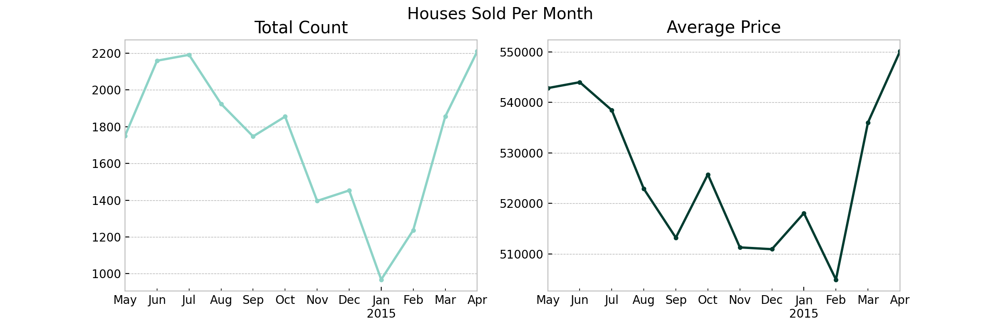
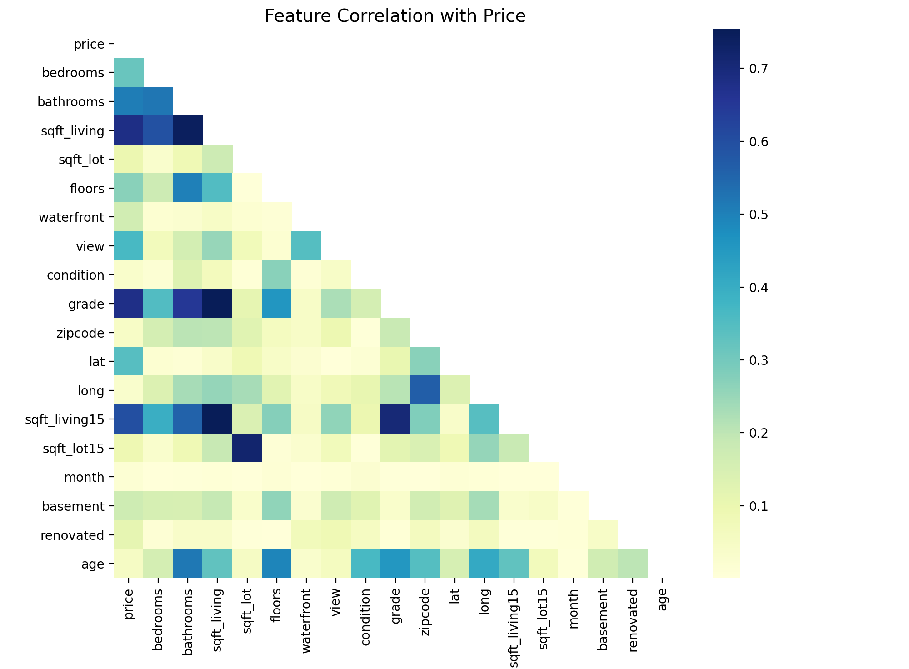
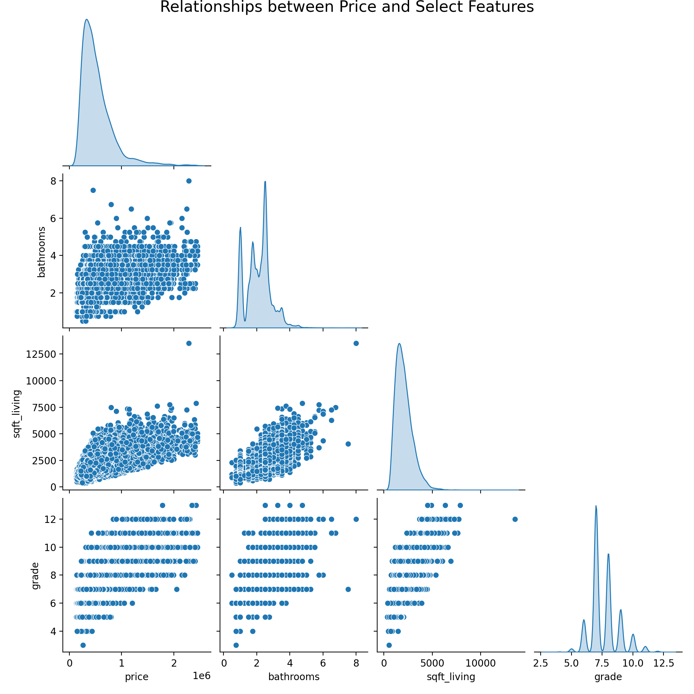
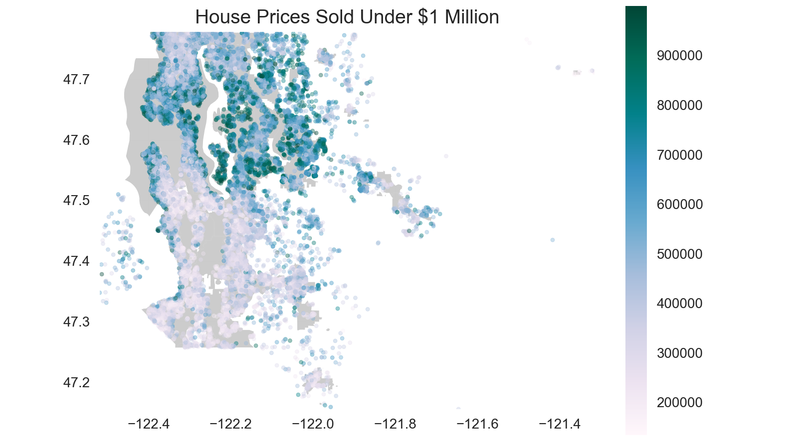
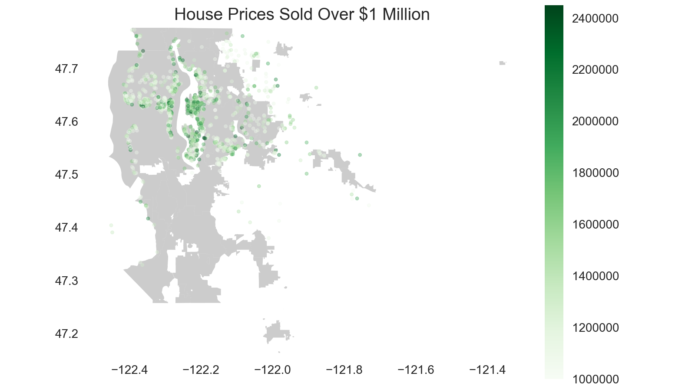
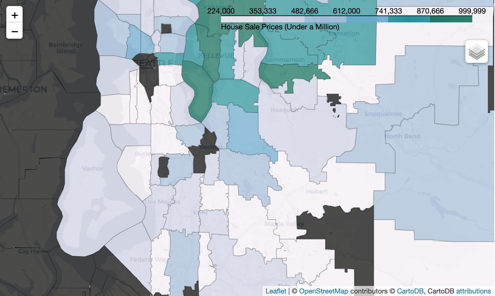
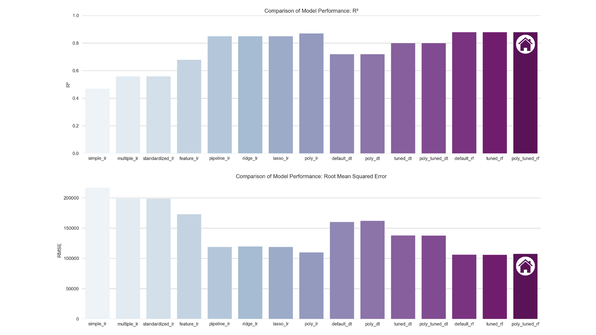
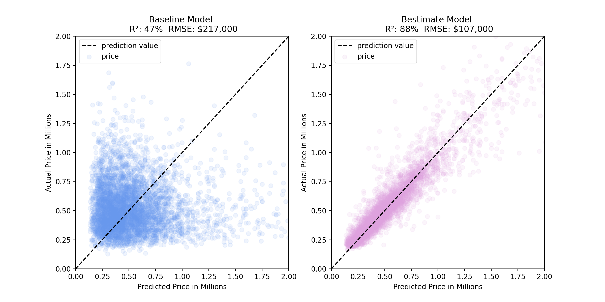
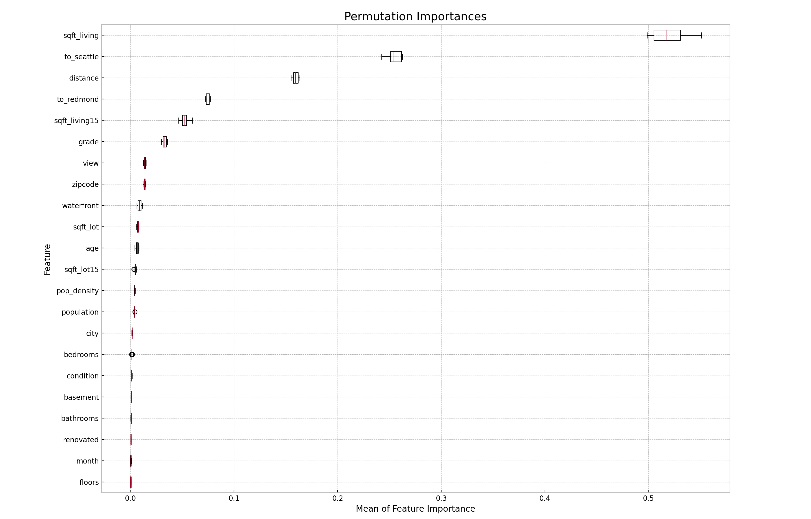

Project
Regression Analysis for Estimating Prices
By Czarina Luna
I. Overview
An analysis and regression modeling of over 21,000 real estate transactions in King County, Washington is completed to improve home valuation and real estate advisory. The findings include top features that are important to the bestimate model, which are square footage of living space, distance to Seattle, total distance to both Seattle and Redmond, distance to Redmond, and square footage of living space of the nearest 15 neighbors. The bestimate model that is the tuned random forest performs best in predicting house prices based on over 20 features. It explains 88% of the variance in the data and its predictions are USD 107,000 off from the actual prices on average.
II. Business Problem
Real estate agencies in King County, Washington may be able to improve their advisory services by identifying important features that factor in home valuation based on relevant data. Doing so will allow real estate agents to provide more accurate prices to clients as supported by historical records. Using publicly available data, I describe patterns in real estate transactions such as features that likely drive prices.
III. Data Understanding
The King County data spans a year between 2014 and 2015 with over 21,000 real estate transactions and 21 features, of which the dependent variable to predict is price. A full description of all column features is provided along with other data files, available in the repository’s data folder.
To prepare the data for analysis, the following pre-processing steps are taken:
# Convert date to date time format and create month feature
data['date'] = pd.to_datetime(data['date'])
data['month'] = pd.DatetimeIndex(data['date']).month
# Correct likely typographical error
data.loc[(data.bedrooms == 33), 'bedrooms'] = 3
# Replace missing values and change to numerical scale for consistency
data.loc[data['waterfront'].isnull(), 'waterfront'] = 'NO'
data['waterfront'] = data['waterfront'].apply(lambda x: 0 if x == 'NO' else 1)
data.loc[data.view.isnull(), 'view'] = 'NONE'
dict_view = {'NONE':0, 'FAIR':1, 'AVERAGE':2, GOOD':3,'EXCELLENT':4}
data['view'] = data['view'].replace(dict_view)
dict_condition = {'Poor':0, 'Fair':1, 'Average':2, 'Good':3, 'Very Good':4}
data['condition'] = data['condition'].replace(dict_condition)
# Only keep the number from string
data['grade'] = data['grade'].map(lambda x: int(x.split(' ')[0]))
# Replace missing values and create new features
data['sqft_basement'] = data['sqft_basement'].replace('?', '0').astype('float')
data['basement'] = data['sqft_basement'].apply(lambda x: 0 if x == 0 else 1)
data.loc[data['yr_renovated'].isnull(), 'yr_renovated'] = 0
data['renovated'] = data['yr_renovated'].apply(lambda x: 0 if x == 0 else 1)
data['age'] = data['date'].dt.year - data['yr_built']
Exploratory Data Analysis
Month-over-month comparison
date_data = data[['date', 'price']]
date_data = data.set_index('date', drop=True).astype('float64')
# Resample data to count transactions per month
monthly_count = date_data.resample('MS').count()
monthly_count = monthly_count.drop(monthly_count.index[-1])
# Resample data to calculate mean price per month
monthly_avg = date_data.resample('MS').mean()
monthly_avg = monthly_avg.drop(monthly_avg.index[-1])

The highest peaks in the number of houses sold per month happened in the seasons of spring and summer. The decline in the months that followed dropped to the lowest point at the first month of the new year. As for the price of houses sold per month, the values followed roughly the same pattern.

Price is strongly correlated with sqft_living, grade, sqft_living15, bathrooms, and bathrooms.
Let’s visualize their relationships and distributions.

Geospatial Mapping
“Location, location, location”
Location is important in real estate and in analysis!
Let's map the data points:
# Create function to map data using geopandas
def map_data(data_, title, name, colormap):
'''Plots the data points using latitude and longitude on top of King County map'''
plt.style.use('seaborn')
fig, ax = plt.subplots(figsize=(8,8))
king_county_fig = gpd.read_file('data/map/Incorporated_Areas_of_King_County___city_area.shp')
geometry = [Point(xy) for xy in zip(data_['long'], data_['lat'])]
geo_data = gpd.GeoDataFrame(data_, crs='EPSG:4326', geometry=geometry)
king_county_fig.plot(ax=ax, alpha=0.4, color='grey')
geo_data.plot(column='price', ax=ax, alpha=0.4, legend=True, markersize=8, cmap=plt.get_cmap(colormap),
legend_kwds={'shrink': 0.7, 'format': '%.0f'})
plt.xlim(data['long'].min(), data['long'].max())
plt.ylim(data['lat'].min(), data['lat'].max())
plt.ticklabel_format(style='plain')
plt.title(title, fontsize=14)
plt.savefig(f'data/images/{name}.png', dpi=200, transparent=True)
plt.show()
map_data(UnderMillion, 'House Prices Sold Under $1 Million', 'fig5', 'PuBuGn')

The concentrated geographic patterns reveal parts of the county populated by the more expensive houses represented by darker colors like the island at the center. The even more expensive houses sold for over a million dollars are located at about the same spots as the dark dots.
Locate the highest priced houses in the data in the following map.

Interactive Maps
I created choropleth maps (code) to further understand how house prices vary by location.
To interact with the maps please use this notebook viewer.

Feature Engineering
# Import data from population census
population = pd.read_csv('data/population.csv')
population_density = population.loc[:, ['City Name', 'Total Population 2010', 'Population Density (Persons / Square Mile) 2010']]
population_density = population_density.rename(columns={'City Name':'city', 'Total Population 2010':'population', 'Population Density (Persons / Square Mile) 2010':'pop_density'})
...
# Map population data to cities
king_county_zipcode = pd.merge(king_county_population, zipcodes, on=['city'])
engineered_data = pd.merge(data, king_county_zipcode, how='inner', on=['zipcode'])
# Create function to calculate distance from cities
def find_distance(center, lat, long):
'''Uses haversine function to find distance between a given center and a point's latitude and longitude'''
house = (lat, long)
distance = haversine(center, house, unit=Unit.MILES)
return distance
def add_distance(data):
'''Applies the find_distance function to dataframe to add columns for distances to Seattle and Redmond'''
seattle = (47.608013, -122.335167)
redmond = (47.673988, -122.121513)
data['to_seattle'] = data.apply(lambda x: find_distance(seattle, x['lat'], x['long']), axis=1)
data['to_redmond'] = data.apply(lambda x: find_distance(redmond, x['lat'], x['long']), axis=1)
data['distance'] = data['to_seattle'] + data['to_redmond']
data = data.drop(columns=['lat', 'long'])
return data
engineered_data = add_distance(engineered_data)
IV. Data Modeling
The dependent variable price is continuous and so I iterate over regression models: from simple to multiple linear regression, ridge and lasso regression, decision trees and finally, random forests.
Machine Learning Pipeline
# Standardize numerical features
num_pipe = Pipeline(steps=[
('num_imputer', SimpleImputer(strategy='median')),
('scaler', StandardScaler())
])
# Perform one hot encoding on categorical features
cat_pipe = Pipeline(steps=[
('cat_imputer', SimpleImputer(strategy='most_frequent')),
('ohe', OneHotEncoder(handle_unknown='ignore'))
])
num_features = ['bedrooms', 'bathrooms', 'sqft_living', 'sqft_lot', 'floors', 'sqft_living15', 'sqft_lot15',
'age', 'population', 'pop_density', 'to_seattle', 'to_redmond', 'distance']
cat_features = ['waterfront', 'view', 'condition', 'grade', 'zipcode', 'month', 'basement', 'renovated', 'city']
col_transformer = ColumnTransformer([
('num_transformer', num_pipe, num_features),
('cat_transformer', cat_pipe, cat_features)
])
# Multiple linear regression using all features
lr_pipe = Pipeline(steps=[
('col_transformer', col_transformer),
('lr', LinearRegression())
])
I perform grid search (code) to find the optimal parameters of decision trees and random forests.
Hyperparameter Tuning
# Create function to run grid search cv
def grid_search(regressor, params):
'''Performs grid search on given regression model, returns best cross validation scores and parameters'''
gridsearch = GridSearchCV(estimator=regressor, param_grid=params, cv=5)
gridsearch.fit(X_train, y_train)
print(f'Best cv score: {gridsearch.best_score_ :.2%}')
print(f'Best parameters: {gridsearch.best_params_}')
Model Performance

V. Results
Baseline to Bestimate Model
The baseline model simple_lr significantly improved to the poly_tuned_rf, our bestimate model:
- from an R-squared of 0.47 to 0.88, and
- from a Root Mean Squared Error of USD 217,000 to USD 107,000
To visualize the significant difference, let’s plot how far away the predictions of the baseline model are to the actual prices versus how much closer the predictions of the bestimate model are:

Permutation Feature Importances
For advisory, the top five features with the highest mean feature importances to the model are:
- Square footage of living space
- Distance to Seattle
- Total distance to both Seattle and Redmond
- Distance to Redmond
- Square footage of living space of the nearest 15 neighbors
The other important features that follows are overall grade related to the construction and design of the house, quality of view from the house, zipcode, whether the house is on a waterfront, and square footage of lot.

Model Deployment
Finally, I deploy the Random Forest regression model (demo) as a prototype I develop for a client-facing application that serves as a Home Value Estimator.
Source Code: Github Repository
Contact
Feel free to contact me for any questions and connect with me on Linkedin.

Copyright 2022. Powered by Introduction theme for Hugo.